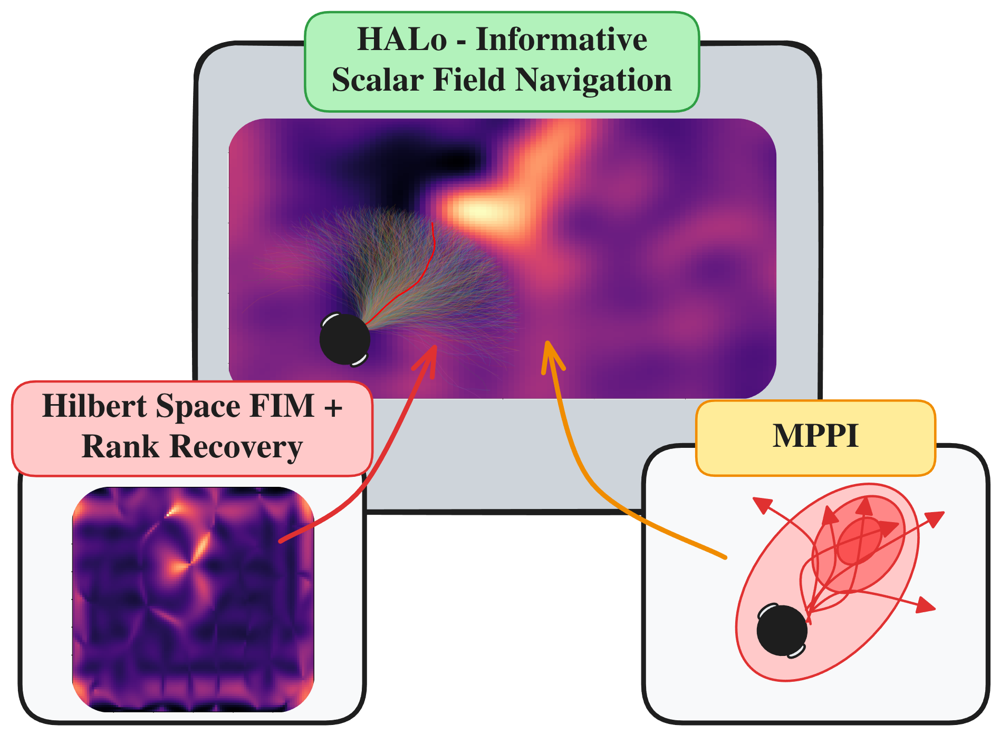
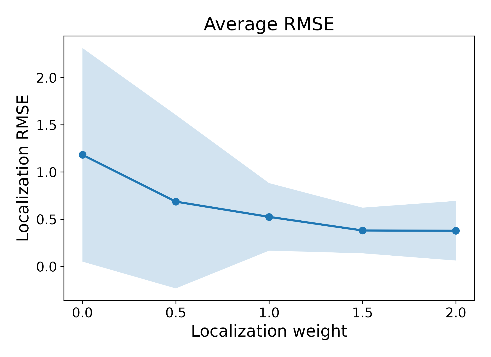
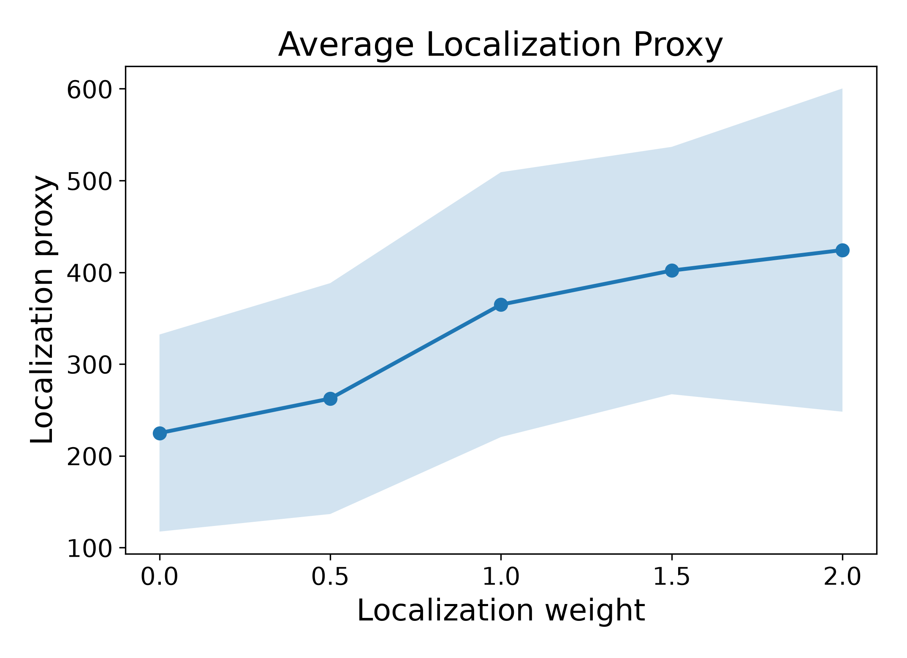
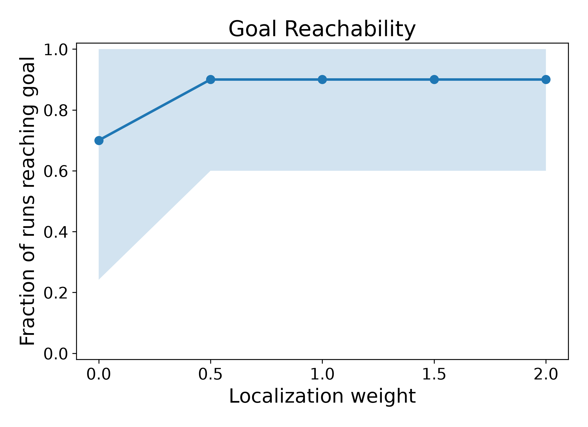
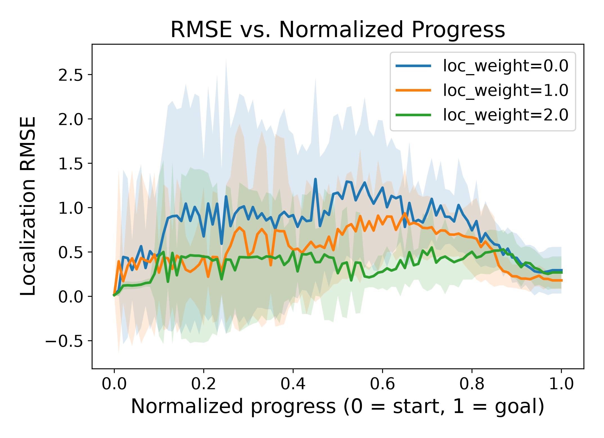

TLDR
A Hilbert-space accelerated method for computing full-rank Fisher information for scalar field navigation.

This paper presents Hilbert-space Active Localizability, a method that uses the reduced-rank Hilbert-space GP to calculate an efficient proxy for a full-rank Fisher information matrix. The method uses the eigen basis to create an addition to the canonical FIM to recover the full-rank FIM.
The following are the list of contributions of this paper in brief:
A GP defines the measurement model, where $z$ is corrupted by zero-mean Gaussian noise, the FIM can be written as: $$ I_\mathbf{x}(z) = \frac{1}{\sigma^2}J_\mathbf{x} J_\mathbf{x}^\top, ~J_\mathbf{x} = \frac{\partial \mathbf{z}}{\partial \mathbf{x}} $$ This measure in general is considered rank-deficient due to the directional constraints on the scalar field.
To address this we build a Hessian additive term to recover the full rank FIM. $$ H(\mathbf{x}) = \sum_j w_j\, H_j(\mathbf{x}), \qquad [H_j(\mathbf{x})]_{kl} = \frac{\partial^2\phi_j}{\partial x_k\partial x_l}(\mathbf{x}) $$ which gives the exact Hessian of the posterior mean at any query point, in closed form, consistent with the gradient and value computations above using the eigenbasis, providing efficient $\mathcal{O}(Pmd^2)$ computations per rollout after an initial $O(m^3)$ computation.
The Hessian is used to compute the full rank FIM and in turn a localizability term that penalizes information poor regions of the scalar field.$$ I(\mathbf{x}) = \mathbb{E}[I_\mathbf{x}] + \gamma\, H(\mathbf{x})H(\mathbf{x})^\top $$
where $\gamma$ absorbs the patch second-moment scale $M$. The scalar localizability score used by the planner is the smallest eigenvalue of $I(\mathbf{x})$, corresponding to the worst-constrained direction under the Cram\'er-Rao bound:
$$ \ell(\mathbf{x}) = \lambda_{\min}\big(I(\mathbf{x})\big) $$
We explore the impact of HALo on the scalar field navigation task. We have two different experiments run, (1) simulation results, where we test the feasability and usefulness of the proposed mechanism, and (2) tests and comparisons on a real scalar field.
The simulation results are compared on a synthetic map with $n=10$ trials traversing across the field. The scalar field has a single high intensity region.




Increasing the localizability weight in simulation steers the robot toward informative regions of the field, cutting average localization error by up to 3x (1.18 → 0.38 RMSE) and improving goal-reaching success from 70% to 90%, with no loss of consistency across trials.
The framework was compared head to head on two other SoTA architectures. (i) InfoMagNav, (ii) E-RRT, (iii) InfoGainGreedy, (iv) MPPI-Baseline, and (v) Rank Deficient FIM.
| Method | N | RMSE$_{\text{avg}}$ (m) | RMSE$_{\text{final}}$ (m) | Path Eff. |
|---|---|---|---|---|
| E-RRT | 5 | $0.623 \pm 0.305$ | $1.078 \pm 0.648$ | $0.741 \pm 0.084$ |
| InfoGainGreedy | 4 | $0.681 \pm 0.248$ | $1.605 \pm 0.639$ | $0.988 \pm 0.006$ |
| InfoMagNav | 5 | $0.350 \pm 0.110$ | $0.534 \pm 0.320$ | $0.991 \pm 0.005$ |
| MPPI | 5 | $0.108 \pm 0.021$ | $0.078 \pm 0.048$ | $0.918 \pm 0.079$ |
| MPPI+FIM | 5 | $0.117 \pm 0.017$ | $0.145 \pm 0.085$ | $0.911 \pm 0.054$ |
| HALo | 5 | $0.085 \pm 0.017$ | $0.059 \pm 0.030$ | $0.928 \pm 0.071$ |
On a real magnetic anomaly field, HALo delivered the lowest localization error of any method tested (0.085 m average RMSE) while staying path-efficient — outperforming entropy-based, greedy, and standard Fisher-information baselines.
This website was inspired by TILTED